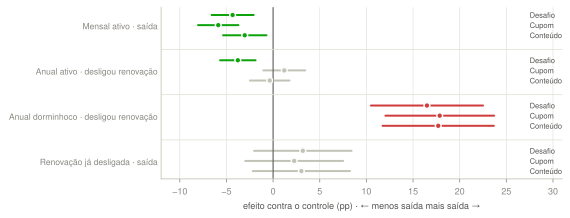

de assinantes perdidos por mês, 2025 → 2026. Cada saída custa R$ 118 para repor.
pp de churn somados à média. Preço e GPS estão juntos nos +0,87 do mensal.
de lucro incremental contra não fazer nada. Só o mensal, a parte mais certa: R$ 49 mil.
◆ atenção No anual, o ganho é renovação desligada evitada; confirmar no vencimento. WhatsApp e CS entram como teste.
Três causas explicam a alta: o reajuste do mensal, uma falha de GPS no Android e uma onda de renovações anuais. A falha de pagamento e o perfil da base ficaram estáveis.
Bug se corrige no produto, e o reajuste pede cuidado com o mensal que usa pouco. O CRM ataca o resto.
O modelo, testado em dados que nunca viu, coloca 66% das saídas entre os 1.500 de maior risco. Os posts ajudam: quem acabou de cumprir a meta tende a sair.
O sorteio de agosto mostra que o desafio segura o mensal e o anual ativos. Contatar o anual que não usa triplica o desligamento. Por isso a regra deixa 3.154 pessoas em paz.
O cupom em massa perderia R$ 397 mil. Tudo é medido contra um grupo de controle permanente, e em 10 semanas decidimos se escalamos.

| Quem | Ação | Pessoas |
|---|---|---|
| ● Mensal ativo ou pouco ativo | desafio · push + e-mail | 6.107 |
| ● Anual ativo | desafio · push + e-mail | 5.492 |
| Top 1.500 de risco entre eles | + WhatsApp (teste) | 1.500 |
| Renovação já desligada, maior risco | CS oferece pausa (teste) | 300 |
| Anual dorminhoco + renovação desligada | nenhum contato | 3.154 |